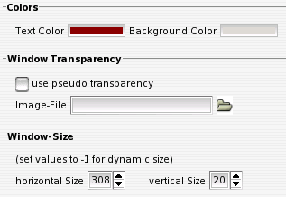

IV.III. Ticker-Layout
Colors
Hier kann die Farbe des News-Textes (Text-Color) und des Hintergurndes (Background Color) des Tickers eingestellt werden. Die Einstellung der Hintergrundfarbe belibt dabei ohne Effekt, wenn im folgenden Bereich der pseudo-transparency Modus aktiviert wird.
Window Transparency
Um das Tickerfenster 'durchsichtig' zu machen, muss hier neben der Aktivierung der entsprechenden Option auch das Hintergrundbild, welches auf dem Desktop dargestellt wird (in Bildschirmgrösse) angegeben werden.
Window-Size
Hier kann die Fenstergrösse des Tickers eingestellt werden. Dabei steht die Einstellung auf einen Wert von -1 für eine dynamische Größenanpassung anhand der Nachrichten. Eine absolute Festlegung der Größe ist beispielsweise sinnvoll, um im Panel andere Starter etc. nicht zu überdecken. Größenveränderungen am Tickerfenster selbst werden in diese Werte übernommen.